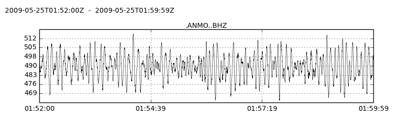

Pisces
A practical seismological database library in Python.
Overview
Pisces connects your Python analysis environment to a seismological database.
Manage and analyze data in the same language
Don't use separate data-management language, like SQL or shell scripts. Just use Python, and connect to SciPy, ObsPy, AIMBAT, pyTDMT, StreamPick, and the rest of the scientific Python ecosystem.
Use common open-source technologies and standards
SQL relational databases, Python, SQLAlchemy, and the SciPy stack are widely-used, free, and open-source technologies.
Because of this, you can leverage knowledge from sites, like StackOverflow, and other disciplines, like web development, for database examples, troubleshooting, or tricks.
Write portable, extensible, and scalable code
Python is multi-platform, SQLAlchemy is database-agnostic, and the whole stack is free and open-source. Write code that will not eventually have to be abandoned due to project size, system architecture, or budgetary or licensing concerns.
Features
- Import/export waveforms directly to/from your database.
- Easy importing/exporting of text "flat-file" data tables.
- Build database queries using Python objects and methods (SQLAlchemy), not by concatenating SQL strings.
- Integration with ObsPy.
- Geographic filtering of results.
What does it look like?
Define tables
Name your Center for Seismic Studies (CSS) 3.0 tables in a module (e.g. mytables.py), inheriting structure and constraints. This just needs to be done once per table name.
mytables.py
import pisces.schema.css3 as css
class Affiliation(css.Affiliation):
__tablename__ = 'affiliation'
class Site(css.Site):
__tablename__ = 'site'
class Origin(css.Origin):
__tablename__ = 'origin'
class Wfdisc(css.Wfdisc):
__tablename__ = 'Wfdisc'
Importing tables
Import your tables.
from mytables import Site, Origin
from mytables import Affiliation as Affil
Import/reflect arbitrary existing database tables.
import pisces as ps
session = ps.db_connect('sqlite:///mydb.sqlite')
sometable, othertable = ps.get_tables(session.bind, ['sometable','othertable'])
Querying tables
Query all stations from the CREST seismic deployment, using SQLAlchemy
q = session.query(Site).filter(Site.ondate.between(2008001, 2008365))
csites = q.filter(Site.sta == Affil.sta).filter(Affil.net == 'XP').all()
Query for western US earthquakes, using a Pisces query builder
import pisces.request as req
wus_quakes = req.get_events(session, Origin, region=(-115, -105, 35, 45), mag={'mb': (4, None)})
Add Albuquerque ANMO to the site table, and the Chelyabinsk bolide to the origin table.
ANMO = Site(sta='ANMO', lat=34.9459, lon=-106.4572, elev=1.85)
bolide = Origin(orid=1, lat=55.15, lon=61.41, mb=2.7, etype='xm')
session.add_all([ANMO, bolide])
session.commit()
Edit a Site, delete an Origin.
session.query(Site).filter(Site.sta == 'MK31').update({'lat': 42.5})
session.query(Origin).filter(Origin.orid = 1001).delete()
session.commit()
session.close()
Get a waveform
Get an ObsPy Trace object from your waveform description (wfdisc) table.
from mytables import Wfdisc
wf = session.query(Wfdisc).filter(Wfdisc.sta == 'ANMO').first()
tr = wf.to_trace()
tr.plot()

Installation
Requires:
- NumPy
- ObsPy
- SQLAlchemy>0.7
- C, Fortran compiler
Install from PyPI:
pip install pisces-db
Install current master from GitHub:
pip install git+https://github.com/jkmacc-LANL/pisces